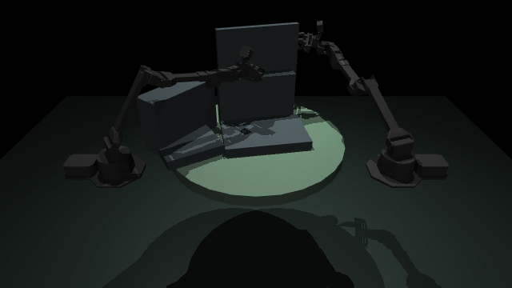
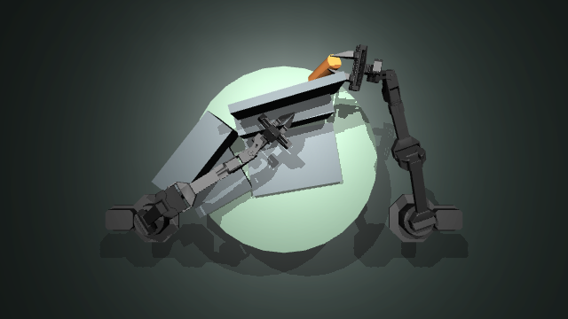
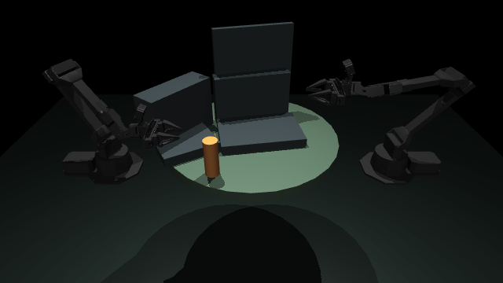

Attempt 1. Fail.
Handover point inside the screens. Arm hit them at 216.2 N, the can went 10.0 mm in, and it fell 1.24 m off target.
Gemini 4 Argon SF Hackathon · Oct 25, 2026
Film a table with your phone. Two robot arms try a task on a physics twin of it. When they fail, Gemini 4 Argon reads the frames and the numbers, says why, and fixes the plan. MuJoCo decides.
Sped up 1.5 to 2.5x. Photoreal is the real desk, Gold is the scan, Solid is what physics collides with. Watch the full 60 second tour or orbit it yourself
FIG. 02 · SIMULATION VS TWIN
| Typical simulation | ArgonTwin | |
|---|---|---|
| The table | Typed in by hand | Measured from 10 seconds of phone video |
| Obstacles | Whatever someone remembered | Screens and laptop fitted to the scan, 1.6 to 3.7 mm RMS |
| The can | A cylinder at a guessed spot | The real Celsius can, where it actually stood |
| A pass means | It works in a world someone imagined | It works on this desk |
Not measured yet: mass, friction, the real arms' calibration. The geometry is real. The physics is MuJoCo.
FIG. 03 · RUN 20261025-134505

Attempt 1. Fail.
Handover point inside the screens. Arm hit them at 216.2 N, the can went 10.0 mm in, and it fell 1.24 m off target.

Argon. 12.2 s.
"The planned handover point is located directly inside the upper_screen and lower_screen obstacles." Cited 4 of 20 frames. Changed 3 things: handover point, lift height, approach clearance.

Attempt 2. Pass.
Handover in front of the screens. Can placed 5.1 mm from target. 0 N and 0 mm against every obstacle.
The model proposes. MuJoCo decides, against fixed limits: within 3 cm, at rest, nothing dropped, under 5 N and 2 mm against any obstacle. Argon's prompt never contains a passing answer. Grasps use a weld assist, and every attempt says so. Receipt: verification.json.
FIG. 04 · NEXT
Not yet: the controller is scripted for ALOHA, grasps use a weld assist, and obstacles are fitted boxes.
Replays the recorded run in your browser. Running the loop live needs the local server and a Gemini key (Run it).